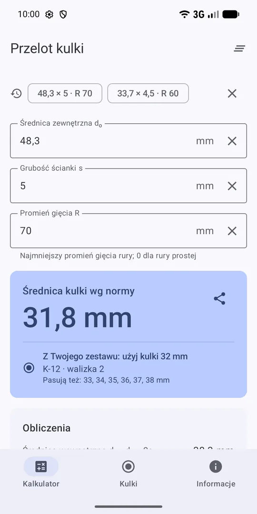
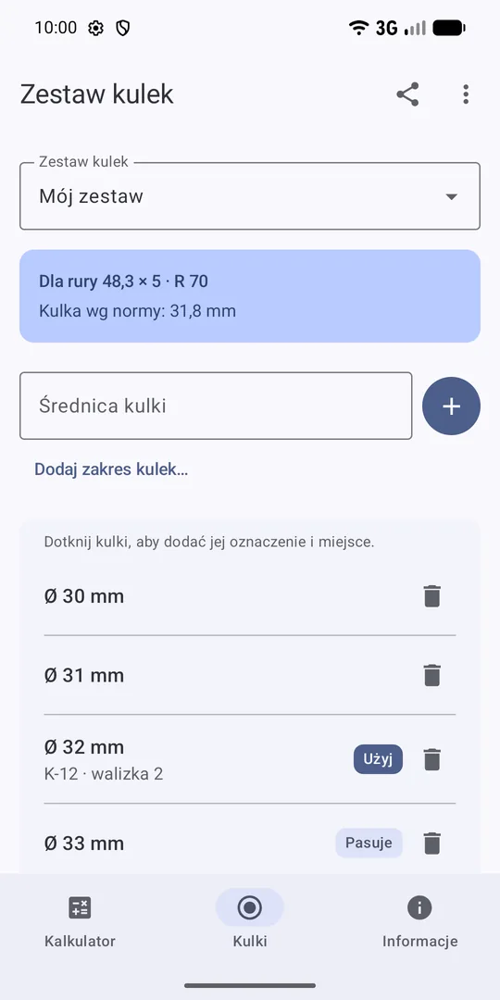

Kulowanie rur – średnica kulki w kilka sekund
Wpisz średnicę zewnętrzną, grubość ścianki i promień gięcia, a aplikacja poda średnicę kulki do próby przelotu kulki według VGB-S-013 albo KTA 3211.1. Podpowie też, której kulki z Twojej walizki użyć.
Pobierz z Google Play Za darmo, bez reklam, działa offline. Android 8.0 lub nowszy.

Czym jest kulowanie
Kulowanie, czyli próba przelotu kulki (niem. Kugeldurchlaufversuch), sprawdza, czy rura gięta albo wężownica nie jest za bardzo spłaszczona w łukach. Przez rurę przepycha się stalową kulkę o określonej średnicy. Jeśli kulka przejdzie swobodnie, przekrój rury jest w porządku. Próbę wykonuje się przy produkcji kotłów, przegrzewaczy, ekonomizerów i innych elementów ciśnieniowych.
Jak dobrać średnicę kulki
VGB-S-013 (punkt 7.2.5, tabela 3)
Średnicę kulki liczy się jako średnicę wewnętrzną rury minus wartość z tabeli 3. Wartość zależy od średnicy wewnętrznej (wiersze 20–29, 30–39 i 40–49 mm) oraz od stosunku promienia gięcia do średnicy zewnętrznej R/dₒ.
Przykład: rura 48,3 × 5 mm, promień gięcia 70 mm
- Średnica wewnętrzna: dᵢ = 48,3 − 2 · 5 = 38,3 mm (wiersz 30–39 mm)
- Stosunek gięcia: R/dₒ = 70 / 48,3 = 1,44 (kolumna 1,0–1,5)
- Odjęcie z tabeli 3: 6,5 mm
- Średnica kulki: 38,3 − 6,5 = 31,8 mm
KTA 3211.1 (punkty 10.2.2.2 i 10.4.2.2)
Niemiecka reguła KTA 3211.1 wymaga kulowania każdej rury giętej na zimno i podaje wzór:
D_K = dᵢ − (Δ + 0,1 · dᵢ + 2 mm)
dᵢ to nominalna średnica wewnętrzna, a Δ to największa dopuszczalna odchyłka minus ze specyfikacji rury. Reguła obejmuje rury ferrytyczne do 38 × 4 mm i austenityczne do 42,4 × 3,6 mm.
Co potrafi aplikacja
- Wynik od razuŚrednica kulki pojawia się podczas wpisywania, także nad klawiaturą na małych telefonach.
- Obliczenia krok po krokuŚrednica wewnętrzna, stosunek gięcia i odjęcie z tabeli – wynik łatwo sprawdzić i wpisać do protokołu.
- Twoje zestawy kulekKulki z każdej walizki czy warsztatu, z oznaczeniem i miejscem. Aplikacja podpowie, której użyć.
- Udostępnianie zestawuPrzekaż zestaw kulek współpracownikom kodem QR albo tekstem.
- Dwie normyVGB-S-013 i KTA 3211.1, z ostrzeżeniem, gdy rura wykracza poza zakres normy.
- Bez reklam i offlineNie zbiera żadnych danych. Po polsku, niemiecku i angielsku.
Pytania
Jaką kulkę dobrać do kulowania rury 48,3 × 5 mm z promieniem gięcia 70 mm?
Według VGB-S-013: średnica wewnętrzna 38,3 mm, R/dₒ = 1,44, odjęcie z tabeli 3 to 6,5 mm, więc kulka ma 31,8 mm. Pasuje też każda większa kulka, mniejsza od średnicy wewnętrznej rury.
Czy aplikacja działa bez internetu?
Tak. Działa w pełni offline, nie ma reklam i nie zbiera danych. Zestawy kulek i ostatnie rury zostają tylko na telefonie.
Czy aplikacja zastępuje normę?
Nie. To narzędzie pomocnicze – wyniki zawsze sprawdzaj z aktualnym wydaniem normy i wymaganiami projektu.